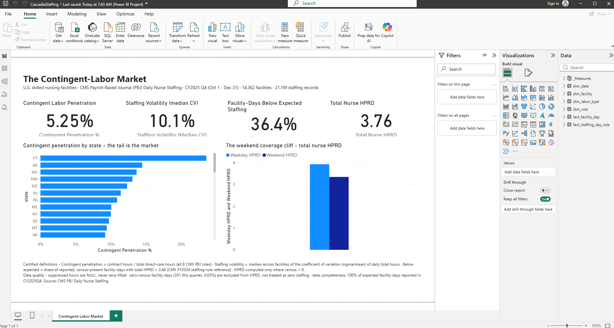

Cascadia Staffing
Contingent-labor economics for U.S. nursing facilities on real CMS payroll data — with a certified-metric governance layer.
Healthcare / Staffing Marketplace Analytics
Cascadia Staffing
21 million daily staffing records across 14,362 U.S. nursing facilities — contract vs. employee hours by role, per facility, per day — answering how big the contingent-labor market is, where it concentrates, and why demand is unplannable.
Overview
A marketplace-labor analytics stack built on the CMS Payroll-Based Journal (PBJ) Daily Nurse Staffing dataset — the auditable, payroll-derived record of every U.S. skilled nursing facility’s daily staffing. It applies the Cascadia approach to workforce economics: the employee-vs-contract labor mix, staffing volatility, and coverage shortfall against a published federal benchmark. It is also the portfolio’s most explicit KPI governance showcase: one certified definition per metric, and every headline number validated twice.
Business Problem
Healthcare staffing marketplaces exist because facilities can’t fully staff with employees: demand swings day to day, weekends run structurally short, and the gap gets filled with expensive agency labor. Those are measurable claims — PBJ records contract and employee hours separately, by role, for every facility-day. This build quantifies the market a staffing marketplace actually serves: how much labor is contingent, where reliance concentrates, how volatile daily demand is, and how often facilities run below expected staffing.
Architecture
Local SQL Server star schema → Power BI import model — no cloud lakehouse; the modeling and governance discipline lives in the schema and the certified-measures layer.
Source layer: CascadiaStaffing SQL Server star schema — 4 dimension tables + 2 fact tables.
fact_staffing_day_role(21,140,864 rows, grain: facility × day × role × labor type, CY2025 Q4)fact_facility_day(1.32M rows, grain: facility × day) — added deliberately so census counts once per facility-day, making a 16× double-counting error structurally impossible rather than relying on measure authors to avoid it
Staging: a Python raw → clean layer — Windows-1252 → UTF-8 decoding, UNPIVOT of the employee/contract hour pairs into a labor-type dimension, dedup on provnum × workdate, and suppression flags; suppressed hours stay NULL and are never zero-filled.
Semantic model + report: Power BI import mode — a dedicated certified-measures layer where every KPI has exactly one definition, written into the measure itself. Page 1 (“The Contingent-Labor Market”) is built, validated, and shown below.
Data Sources
| Source | Type | Rows | Notes |
|---|---|---|---|
| CMS PBJ Daily Nurse Staffing | Federal (CMS) | 1.32M raw facility-days → 21.1M modeled | CY2025 Q4 · 14,362 facilities × 92 days · employee/contract hours unpivoted into a labor-type dimension across 8 nursing roles |
Attribution: CMS Payroll-Based Journal Daily Nurse Staffing — public domain federal data, derived from facility payroll submissions.
Headline Skill: KPI Governance on Real Data
PBJ has honest traps, and the build models them instead of papering over them:
- A null is not a zero. Suppressed/unreported hours stay NULL and are never zero-filled; 65% of fact rows are real reported zeros, and merging the two would silently corrupt the contract-labor ratio.
- Undefined means undefined. 351 facility-days report zero residents; hours-per-resident-day is excluded there — with an on-page exclusion counter — rather than divided into a fake zero.
- Kill the trap structurally. Daily census arrives denormalized across 16 rows per facility-day; naive summation overstates resident-days by exactly 16× and still looks plausible on a chart. A facility-day grain table removes the mistake by design.
- One definition per number. Every KPI card traces to a single certified measure with its definition stated on the page and embedded in the model.
- Validate twice. Every headline number was cross-checked against independent T-SQL run directly on the warehouse — and the state-level results reproduce independently published research (Vermont’s contract share matches LTCCC’s Q1 2025 figure to within a tenth of a point).
Key Findings (CY2025 Q4)
- 5.25% of all direct-care hours are contract labor — roughly double the ~3% pre-pandemic baseline, but well down from the ~11% peak of 2022: facilities are actively unwinding expensive agency contracts.
- The average is not the market. State-level contingent reliance spans ~1% (Alabama) to ~24% (Vermont) — a marketplace’s demand lives in that tail, not the mean.
- Licensed-nurse scarcity shows up in the mix: contingent share is 5.98% for nurse roles vs 4.78% for aide roles.
- Daily demand is unplannable: the median facility’s total care hours swing ±10% day to day (coefficient of variation of daily hours).
- 36.4% of facility-days run below the CMS ~3.48 total-nurse HPRD reference — even though the national average (3.76) clears it. Average adequate, distribution broken.
- A structural weekend cliff: staffing drops from 3.93 to 3.34 hours per resident-day every weekend — a recurring 15% shortfall.
The Report

Facility Explorer page publishes with Phase 2.
Tech Stack
SQL Server 2025 T-SQL Python CMS PBJ Data Power BI DAX Semantic Model (PBIP) PowerShell
Links
- Build Repository — SQL DDL, Python acquisition/staging, one-command reproducible build (
run_build.ps1), KPI validation scripts - Power BI Handoff Doc — schema, validated row counts, and the data traps documented for the semantic-model layer
- Cascadia Architecture Overview